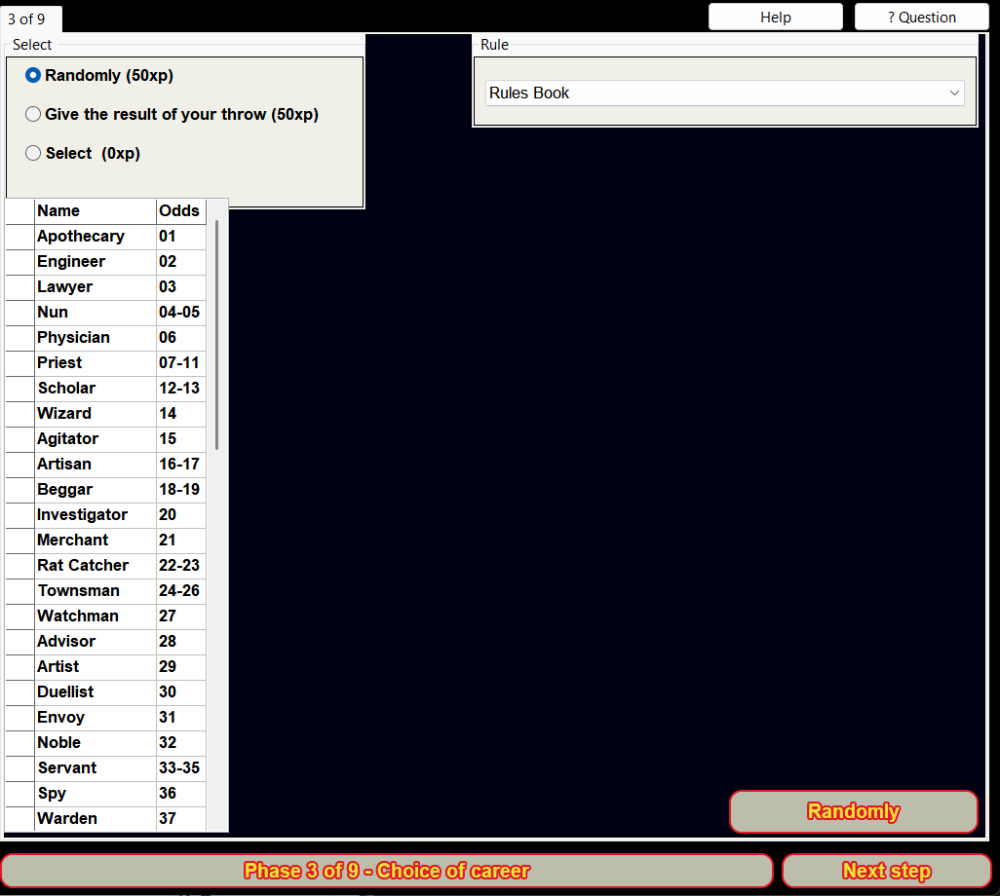
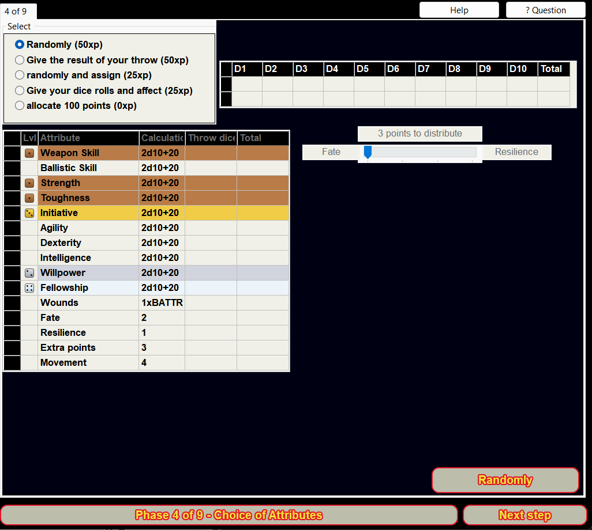
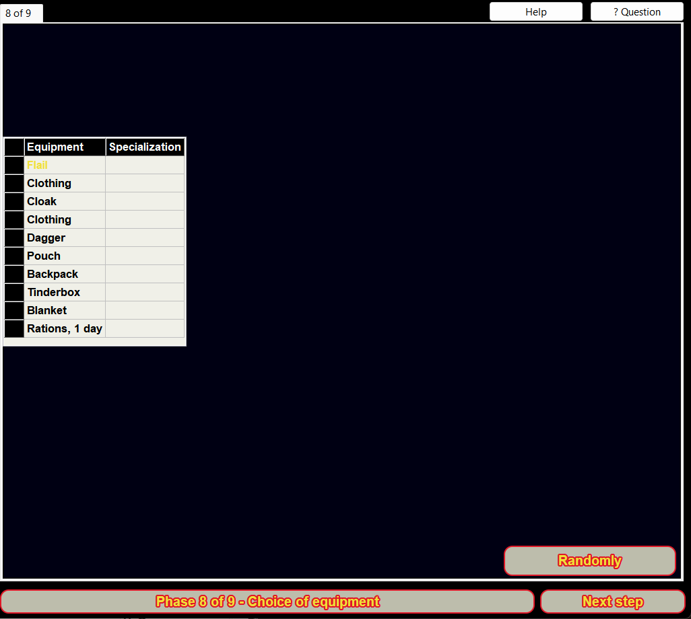
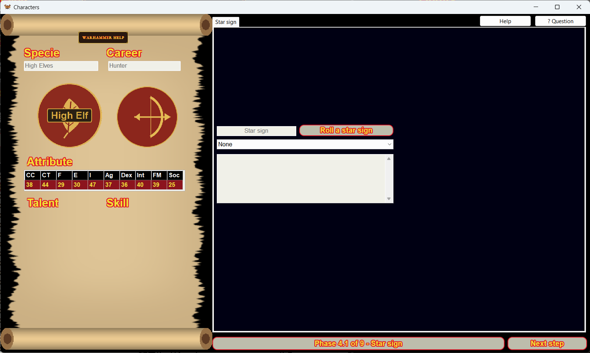

Règles WFRP4. Version anglaise : PLAYER_GUIDE_1_CREATION.md.
Pour qui : un joueur qui découvre le programme, et un habitué qui veut retrouver un point précis (les fiches par question sont dans la phase 3).
La version (WFRP1, WFRP2, WFRP4) se choisit avant de créer le personnage, et elle ne change plus ensuite. Un personnage de WFRP1 ne peut pas devenir un personnage de WFRP4 : les caractéristiques, les carrières et les compétences ne correspondent pas. Si tu changes d'avis, crée un nouveau personnage.
Pour l'instant, le seul passage permis est entre WFRP4 et la variante Momentum (WFRP5), voir la fiche « Option Momentum » (phase 3).
La création se fait en étapes qui se suivent, dans cet ordre. Le bouton Étape suivante n'avance que si l'étape en cours est complète ; sinon un message te dit ce qui manque.
| Étape | Onglet | Ce qu'on fait |
|---|---|---|
| 0 | Livres | choisir les livres utilisés |
| 1 | Race | choisir la race |
| 2 | Métier | choisir la carrière |
| 3 | Attribut | fixer les caractéristiques |
| 4 | Talent | choisir les talents |
| 5 | Compétence de race | répartir les points de compétences de race |
| 6 | Compétence de métier | répartir les points de compétences de carrière |
| 7 | Équipement | choisir l'équipement de départ |
| 8 | Nom | donner un nom, puis enregistrer |
En plus, selon la race et les livres choisis, des étapes supplémentaires peuvent s'intercaler (clan, mutation de départ, background, signe astral, appartenance, forme du familier). Elles sont décrites plus bas.
Tu vois la liste des livres actifs (ceux choisis dans le menu principal). Tu ne peux qu'en retirer pour ce personnage : décoche ceux que tu ne veux pas utiliser.
Pourquoi c'est important : les livres cochés ici décident des races, des carrières, des talents et de l'équipement proposés pendant toute la création, et ils sont mémorisés avec le personnage.
Règles optionnelles (tableau de droite). Il liste les règles optionnelles proposées par les livres cochés (par exemple Star Signs, Second roll for sub-careers, Career choice by species). Une case cochée en colonne A signifie que la règle s'applique à ce personnage ; décoche-la pour l'ignorer. Le choix ne vaut que pour le personnage en cours de création ; l'état de départ vient du réglage du menu principal. Sélectionne une ligne pour lire son explication sous le tableau (ou la page du livre quand il ne donne pas de texte). Le tableau suit les livres : décoche un livre et ses règles disparaissent.

Trois façons de choisir, chacune avec un coût ou un gain d'expérience de départ :
| Mode | Ce que tu fais | Xp |
|---|---|---|
| Au hasard | le programme tire la race | 20 Xp |
| Donnez le résultat de votre lancé | tu lances le dé toi-même et tu saisis le résultat | 20 Xp |
| Au choix | tu prends la race que tu veux | 0 Xp |
Passe à l'étape suivante quand tu es satisfait. Le chiffre est le nombre de Xp que le personnage gagne pour avoir laissé faire le hasard (règle du Rulebook) ; il s'ajoute aux Xp de départ.
Certaines races ouvrent des étapes en plus :

Même principe qu'à l'étape 1 :
| Mode | Xp |
|---|---|
| Au hasard | 50 Xp |
| Donnez le résultat de votre lancé | 50 Xp |
| Au choix | 0 Xp |
Points particuliers :

Cinq façons de procéder :
| Mode | Ce que tu fais | Xp |
|---|---|---|
| Au hasard | tirage automatique, valeurs fixées | 50 Xp |
| Donnez le résultat de votre lancé | tu saisis tes propres jets | 50 Xp |
| Au hasard et affectez | tirage automatique, mais tu décides quelle valeur va à quelle caractéristique | 25 Xp |
| Donnez vos lancés de dé et affectez | tes jets, que tu répartis | 25 Xp |
| Répartissez 100 points | tu distribues 100 points toi-même | 0 Xp |
À savoir :

Les talents de départ viennent de la race. Quand un talent propose un choix (« A ou B » ou « X (n'importe quel…) »), tu dois trancher : tant qu'un choix reste ouvert, tu ne peux pas continuer.
Un bouton Au hasard tire un talent quand la race le prévoit.
Certains peuples de Nations of Mankind (Kislev, Cathay, Estalie...) terminent leur liste par un trait régional (« Provincial Trait », « Region Trait », « City State Trait »...). Choisis ta région : chacune apporte ses propres talents, souvent avec un talent aléatoire de plus, donc les talents qui suivent dépendent de ce choix.

Ta race t'accorde des compétences à répartir. Dans le livre de règles, la plupart des races prennent 3 compétences à +5 et 3 compétences à +3 (le Skink de Lustria en prend 2 et 2). Si ton meneur de jeu utilise la règle facultative Xp/25, les compétences à +3 comptent à +5 une fois le personnage ouvert en modification (voir le guide de modification, Expérience).

Tu répartis 40 points entre les compétences de ta carrière (en WFRP2, cette règle ne s'applique pas). Le compteur affiche « n / 40 Pts » ; il faut exactement 40. Chaque compétence prend de 0 à 10 points : une valeur plus haute est refusée et la précédente revient. Au hasard règle d'abord les lignes ouvertes (« (Any) », « A ou B »), puis répartit les 40 points sur 8 compétences au plus (5 chacune s'il y en a 8 ou plus).

L'équipement de départ vient de ta carrière. Certaines lignes demandent un choix : tant qu'une ligne reste à choisir, l'étape ne se valide pas. Un bouton Au hasard choisit pour toi.
Tu peux aussi saisir ton argent de départ (en couronnes d'or).

Quand tout est complet, le personnage est enregistré avec ses livres, et tu peux l'ouvrir pour le faire évoluer (voir 2. Modifier un personnage).

| Étape | Quand elle apparaît | Ce qu'on fait |
|---|---|---|
| Clan | race Skaven | choisir un clan par la liste ou par tirage |
| Mutation de départ | race Mutant | tirer la mutation (bouton « Tirer la mutation ») |
| Background | règles de background (surtout WFRP2) | lancer le d10, régler chaque choix |
| Signe astral | livre qui le prévoit (Archives of the Empire II) | tirer un signe ; il modifie des caractéristiques, donne un talent et rapporte 25 Xp |
| Appartenance | certaines carrières (régiments, etc.) | choisir l'appartenance — facultatif |
| Forme du familier | carrière qui donne un familier | choisir ou tirer sa forme |
Exemple, l'étape Signe astral (bouton « Tirer un signe » ou choix dans la liste) :

| Tu ne peux pas continuer parce que… | Ce qu'il faut faire |
|---|---|
| aucun livre n'est coché | recoche au moins un livre (étape 0) |
| aucune race / aucun métier | fais ton choix (ou clique sur Randomly), puis passe à l'étape suivante |
| une caractéristique n'a pas de jet | tire ou saisis tous les jets |
| le total des 100 points n'est pas 100 | corrige la répartition |
| un choix de talent reste ouvert | tranche chaque ligne « A / B » |
| le nombre de compétences de race est faux | respecte « 3 à +5 et 3 à +3 » (ou ce que dit le message) |
| une compétence cochée (race) ou dotée de points (métier) n'a pas encore sa spécialisation, elle affiche encore « (Any) » ou « A ou B » | précise-la (une langue, un métier...), ou laisse Au hasard la régler |
| le total des compétences de métier n'est pas 40 | ajuste jusqu'à 40 |
| un choix d'équipement reste ouvert | choisis ou clique sur Au hasard |
| le nom est vide ou déjà pris | change le nom |